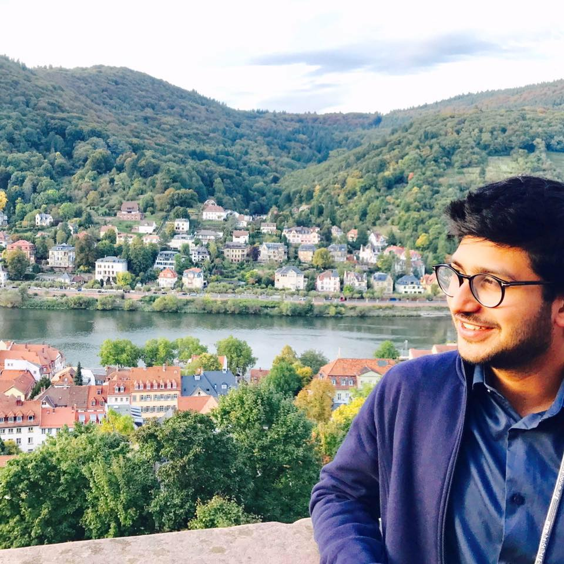

|  |
Ainesh Bakshi
Email: abakshi (at) cs (dot) cmu (dot) edu Office: GHC 7707 |
I am a first year PhD student at Carnegie Mellon University. I am extremely fortunate to be advised by David Woodruff. I am broadly interested in Theoretical Computer Science.